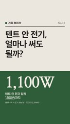

14번 영상
텐트 안 전기, 얼마나 써도 될까?
쿠팡 링크는 아직 준비 중이에요. 아래 비교는 지금 바로 읽을 수 있어요.
전기매트 켜기 전 3가지 확인
텐트 안 전기 합계 1,100W까지
W = 전기 쓰는 양 · 2025.12.29 개정
먼저 KC 번호를 봐요
- KC 안전인증 번호
- ✔ 전기매트는 인증 대상
- ⚠ 라벨 번호를 꼭 봐요
- 전기 합계 1,100W
- ✔ 제품에 적힌 W를 더해요
- ⚠ 캠핑장마다 더 낮기도
- 누전차단기 · KC 제품일 때
- 접지 말고 펴서
- ✔ 보관은 둥글게 말아요
- ⚠ 접힌 열선, 불날 수 있어요
출처: 관광진흥법 시행규칙 별표7(2025.12) · 한국소비자원